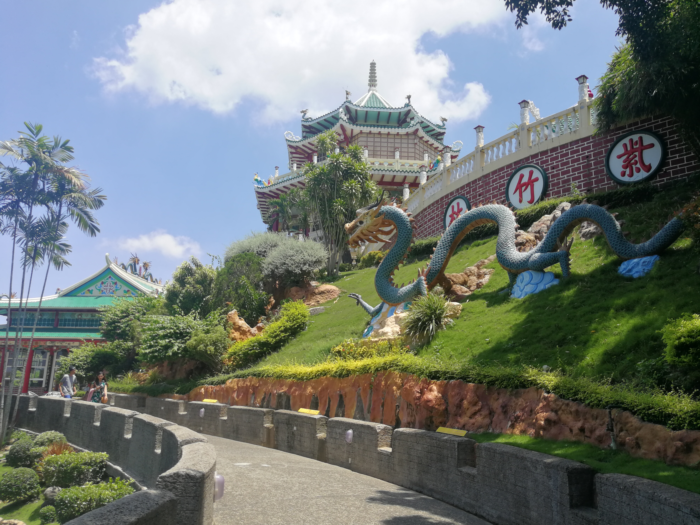

Cebu Taoist Temple

The temple was built by Cebu's substantial Chinese Filipino community in 1972. At an elevation of 110 metres (360 ft) above sea level, the temple is a towering, multi-tiered, multi-hued attraction accessible by three separate winding routes. Unlike the neighboring Phu Sian Temple, the Taoist temple is open to worshipers and non-worshipers alike. A ritual among devotees is where one prays to the gods to grant one's wish. The ritual includes washing hands, going inside the chapel barefoot and dropping two blocks of wood. If the wood blocks are both face up then one could make a wish. If not then it is not yet the time for one's wish to be granted and one has to come to the temple some other time. The temple is the center of worship for Taoism, the religion which follows the teachings of the ancient Chinese philosopher, Lao Zi. Another ritual among Taoist devotees, which is done during Wednesdays and Sundays, is the climbing of its 81 steps (representing the 81 chapters of Taoism scriptures) to light joss sticks and have their fortune read by the monks. The entrance to the temple was a replica of the Great Wall of China. The temple includes a chapel, a library, a souvenir shop, and a wishing well. The spacious balconies offer a scenic view of the downtown Cebu.